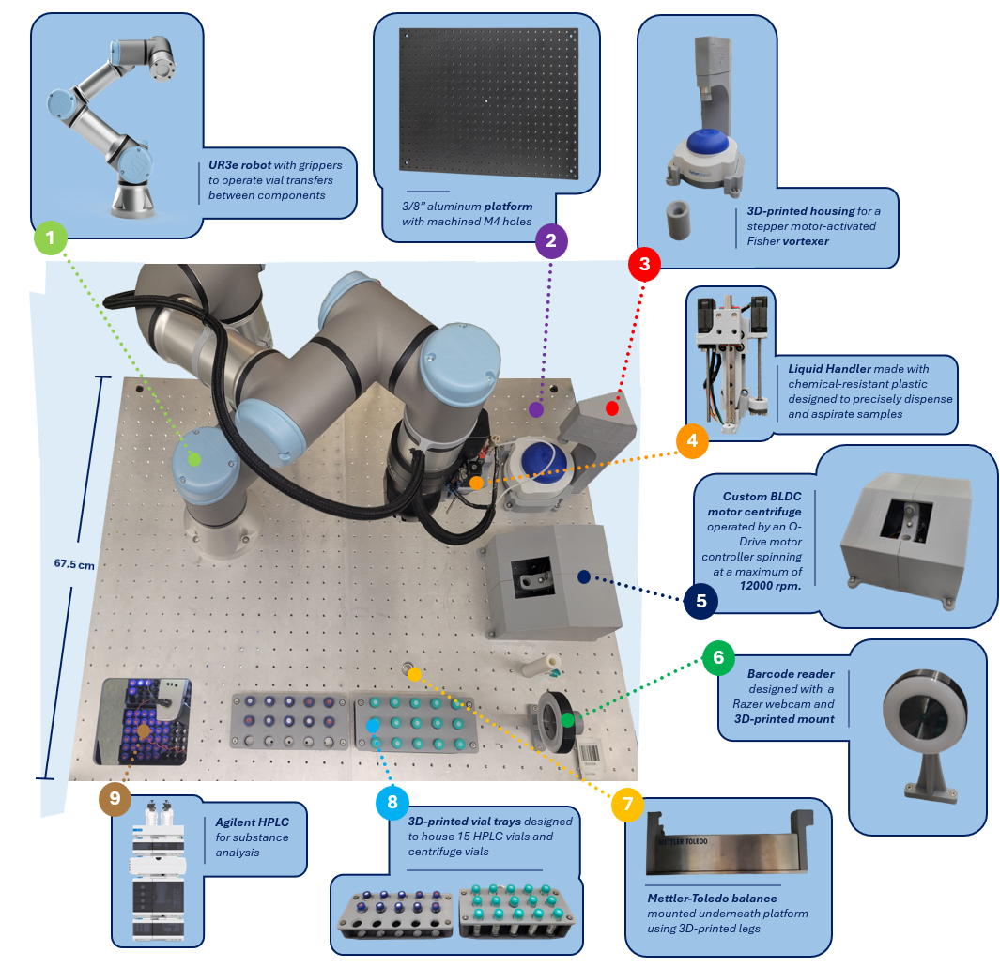
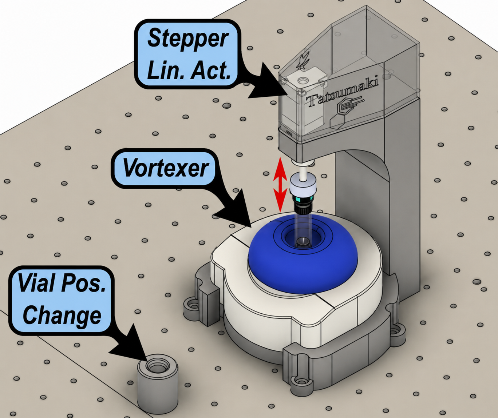

Calibra: Mobile Robotic Drug-Analysis and Quantification Platform
Why Calibra?
Each year, thousands of people in British Columbia experience overdoses, many linked to an increasingly unpredictable and contaminated drug supply.
Drug-checking services can help reduce this risk by identifying what is actually in a submitted sample, but higher-quality analysis is often limited by the need for time-consuming manual preparation, specialized equipment, and trained personnel.
Developed with support from University of British Columbia and BC provincial health authorities, Calibra addresses this bottleneck by automating sample preparation using a robotic arm,
custom electromechanical modules, smart sample tracking, and plug-and-play Python-based control.
What Calibra Does
Calibra turns a manual drug-analysis workflow into an automated robotic process. After the user labels a vial, adds a sample, and places it into the tray,
the system takes over the repetitive preparation steps: diluting the sample, weighing it, mixing the contents, separating unwanted solids, transferring the prepared liquid, and starting the analysis run.
The prepared sample is measured using HPLC, a lab instrument that separates and detects compounds in a mixture. Once analysis is complete,
the software extracts the measurement data, calculates the sample composition, and links the result to the original vial ID.
The workflow below summarizes the full process from user loading to final result.

Mechanical Architecture
The figure below shows the mechanical components that makes up Calibra

Hidden: Syringe pump, electronics enclosure
1-2. Robot and Platform
The first step in building Calibra was assembling the physical robot platform and mounting the UR3e arm. The system was built on a rigid 3/8-inch aluminum plate with machined M4 holes, supported by heavy duty aluminum extrusions from Vention,
which served as the main structural base for the robot and surrounding modules. The whole system is mounted on a cart, since stakeholders desired the whole system to be mobile as to be able to taken to various harm-reduction sites.
The robotic arm was equipped with custom-designed gripper fingers specifically made to handle small cylindrical vials.
The gripper geometry was designed so that the robot could reliably pick, transfer, and place samples without slippage or misalignment.
Before installation, I modeled the system in CAD and performed simulations to ensure
the robot was placed in the optimal position to maintain safe approach paths, reduce unnecessary travel, and most importantly, reach all required modules.
After installation, I programmed some basic PLC instructions to physically confirm reachability before moving onto designing modules (see video below).

3. Vortexer
Our system required an automated module to ensure adequate dissolution and sample homogeneity. A common method for dissolution used in other automated systems included commercial sonicator baths, which use ultrasonic waves in a water bath to dissolve solids. However, during testing, we found that fluctuating water levels due to factors like evaporation led to unreliable sample mixing during extended autonomous operation. Furthermore, laboratory-grade sonicators cost more than $1500. This prompted us to look for alternative solutions, and we eventually settled on a vortex mixer, which was ideal for small-scale mixing.
We modified a commercially available vortexer and installed a 3D-printed mount that uses a linear actuator to first lightly hold the sample vial in place after it is delivered by the robot arm. Following delivery of the vial and withdrawal of the robotic arm, the actuator then pushes the vial further to engage the vortexer’s pressure switch and initiate mixing.
The linear actuator is controlled by a custom-designed stepper motor driver, which is discussed later.

Impact
Reduced automation module costs from approximately $1,500-$5,000 to under $100 while achieving reliable robotic sample-handling workflows.